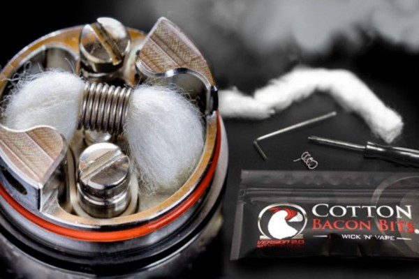

Apa itu coil?
Coil
Coil vape adalah elemen pemanas kecil yang ada di dalam rokok elektrik (vape) yang berfungsi mengubah cairan vape menjadi uap. Coil vape merupakan bagian penting dari vape yang perlu diganti secara berkala agar vape bekerja dengan baik. Coil vape memiliki beberapa karakteristik, di antaranya: Coil vape biasanya terbuat dari kawat logam yang dibalut dengan kapas untuk menyerap cairan vape. Coil vape menggunakan daya dari baterai untuk dipanaskan. Coil vape memiliki berbagai ukuran dan bahan, seperti stainless steel, kanthal, atau nickel. Semakin rendah resistansi coil, semakin besar uap yang dihasilkan.
Beberapa material yang populer digunakan untuk coil vape, di antaranya: Stainless steel, Kanthal, Nichrome.
Kembali ke Halaman Utama